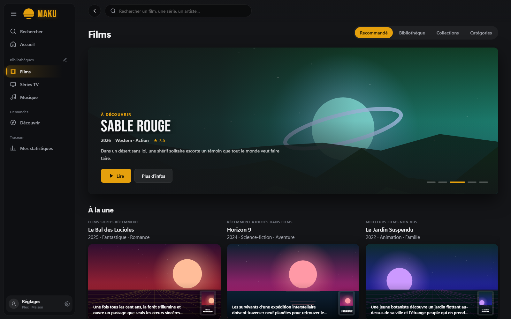
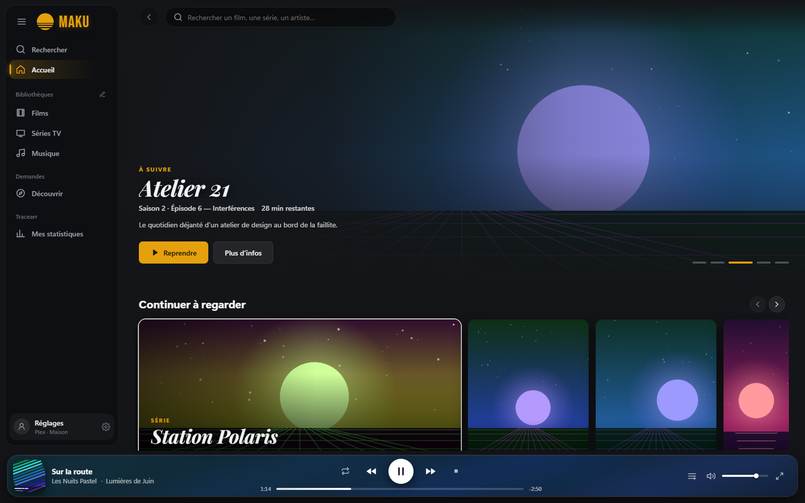
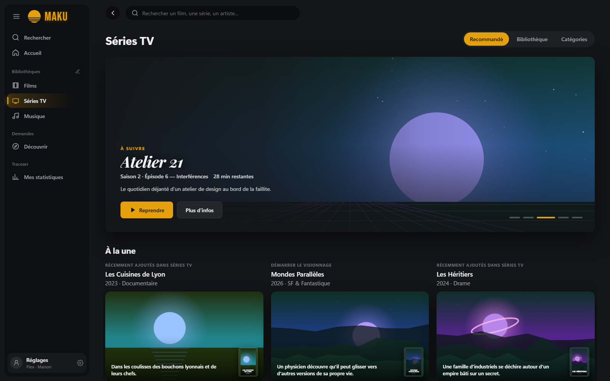
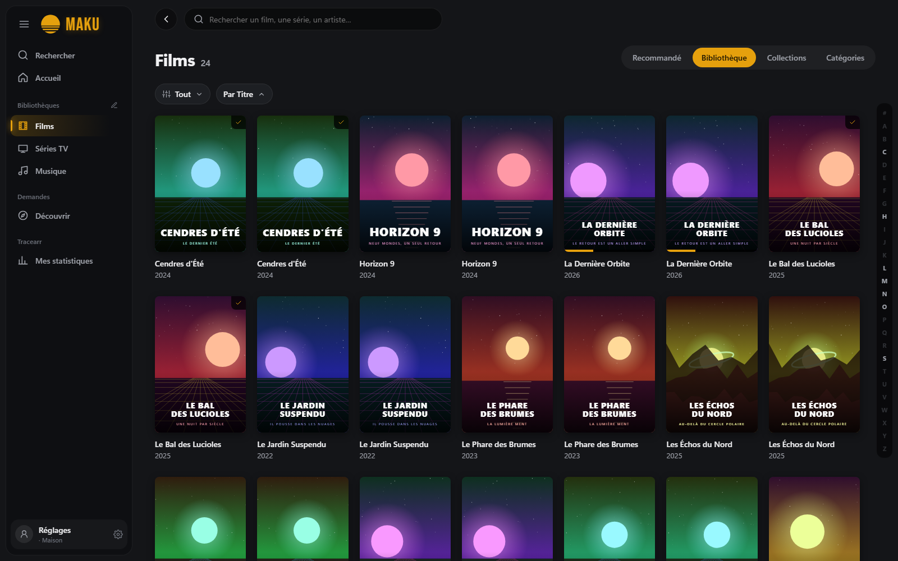

Accueil › Fonctionnalités › Les bibliothèques
Les bibliothèques
Votre serveur, présenté comme une vitrine.
Grandes affiches, logos officiels, fonds en haute définition : Maku donne à votre collection l'allure d'une plateforme de streaming, et la range pour que vous trouviez toujours quoi regarder.

L'accueil
Ce que vous regardiez, en grand
Un bandeau fait défiler cinq titres à la une. Juste dessous, Continuer à regarder présente vos lectures en cours en grandes affiches : celle que vous survolez s'ouvre avec sa scène, son épisode, sa progression et le bouton Reprendre.
- De grands panneaux À la une, puis les rangées de votre serveur.
- Un accueil à votre goût : rangées à masquer ou à réordonner, bibliothèques à épingler avec leurs derniers ajouts, pour chaque appareil.
- Au survol d'une affiche, un simple triangle blanc lance la lecture.

Les fiches
Chaque film plonge dans son ambiance
Le fond du film sur toute la largeur, son logo en grand au centre, le titre d'origine et l'heure à laquelle il se terminera si vous le lancez maintenant.
- Les notes qui comptent : IMDb, Rotten Tomatoes (presse et public), TMDB et Allociné (presse et spectateurs), et vos propres étoiles de 1 à 5. Chacune se masque si vous préférez.
- Deux panneaux : l'équipe d'un côté, la vidéo, l'audio et les sous-titres de l'autre.
- La distribution : un acteur ouvre tous ses films et séries présents sur votre serveur.
- Logos officiels : celui du serveur, sinon celui du service en ligne de Plex, dans votre langue d'abord, ou celui de TMDB avec votre clé gratuite. À défaut, une typographie de cinéma choisie selon le genre.
- Plus de ce genre, pour enchaîner.

Les séries
Une saison, tous ses épisodes d'un regard
Une saison montre ses épisodes de haut en bas, chacun avec sa vignette et ses informations à droite : titre, durée, temps restant, note et résumé. L'épisode en cours est mis en avant, et le bouton principal le reprend : Reprendre S1 · E2.
- La fiche d'une série vous emmène directement au prochain épisode à voir.
- Une petite coche discrète marque les épisodes vus.
- Vu, non vu et la note s'appliquent sur place, sans recharger la page.

Les catégories
Un genre, une grande carte colorée
Chaque genre de votre bibliothèque devient une carte à sa couleur, avec un éventail de ses affiches les mieux notées. Un clic, et la bibliothèque n'affiche plus que ce genre.
- Les mêmes grandes cartes sur ordinateur, téléphone et TV.
- En revenant d'une fiche, vous retrouvez la catégorie, la position et l'affiche quittées.

Trier, filtrer, sauter
Trouver un titre parmi des milliers
L'onglet Bibliothèque a son menu Tout (non vus, en cours, HDR… ou un genre, une année, un acteur, un réalisateur, un studio) et son menu de tri (titre, année, date de sortie, notes, durée, date d'ajout, au hasard…). Votre choix est gardé pour la prochaine visite.
- Le bandeau des lettres, sur ordinateur : « # A…Z » sur le côté mène directement à la première entrée d'une lettre, même loin dans une très grande bibliothèque, filtres compris (avec Plex).
- La recherche trouve films, séries et artistes d'un coup, puis les titres absents que vous pouvez demander.

Les collections
Les sagas dans l'ordre
Les bibliothèques de films ont leurs collections : une saga, un univers, une sélection. Chacune ouvre sa page, avec ses films dans l'ordre de sortie et un bouton qui lance le premier que vous n'avez pas encore vu.
- L'onglet n'apparaît que dans une bibliothèque qui a des collections.
- Le bandeau des lettres y mène aussi directement à une collection.
- L'administrateur peut en créer, les ranger dans l'ordre de l'histoire en glissant les jaquettes, ou composer une collection intelligente qui se remplit seule.
À vos couleurs
Jaune, rouge, vert ou violet : toute l'interface change de teinte, et l'icône de l'application suit, dans la barre des tâches comme sur l'écran d'accueil du téléphone et de la TV. Le fond aussi se choisit : la nuit de Maku, un gris graphite ou un gris ardoise.
Le menu de gauche se replie en icônes ; ses bibliothèques se réordonnent en les glissant, ou se masquent.
Maku parle français, anglais, espagnol, allemand et néerlandais, et les rangées du serveur arrivent dans la même langue.